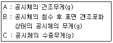
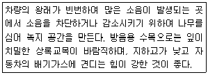
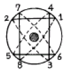

조경기능사 (2010-01-31 기출문제)
1과목: 조경일반
1. 우리나라 전통조경의 설명으로 옳지 않은 것은?
- 신선사상에 근거를 두고 여기에 음양오행설이 가미 되었다.
- 연못의 모양은 조롱박형, 목숨수자형, 마음심자형 등 여러 가지가 있다.
- 연못은 땅 즉 음을 상징하고 있다.
- 둥근섬은 하늘 즉 양을 상징하고 있다.
(정답률: 86%)

2. 도시공원 및 녹지 등에 관한 법규상 도시공원 설치 및 규모의 기준에서 어린이공원의 최소규모는 얼마인가?
- 500㎡
- 1000㎡
- 1500㎡
- 2000㎡
(정답률: 85%)
3. 일반도시에서 가장 많이 사용되고 있는 이상적인 녹지 계통은?
- 분산식
- 방사식
- 환상식
- 방사환상식
(정답률: 62%)
4. 어린이공원에 심을 경우 어린이에게 해를 가할 수 있기 때문에 식재하지 말아야 할 수종은?
- 느티나무
- 음나무
- 일본목련
- 모란
(정답률: 93%)
5. 차경에 대한 설명중 적당하지 않은 것은?
- 멀리 바라보이는 자연풍경을 경관 구성재료 일부분으로 이용하는 수법이다.
- 전망이 좋은 곳에서 쉽게 적용시킬 수 있는 수법이다.
- 축을 강조하는 정원 약식에서 특히 많이 사용된다.
- 차경을 이용할 때 정원은 깊이가 있게 된다.
(정답률: 66%)
6. 일반적으로 수종 요구특성은 그 기능에 따라 구분 되는데, 녹음식재용 수종에서 요구되는 특징으로 가장 적합한 것은?
- 생장이 빠르고 유지 관리가 용이한 관목류
- 지하고가 높고 병충해가 적은 낙엽 활엽수
- 아래 가지가 쉽게 말라 죽지 않는 상록수
- 수형이 단정하고 아름다운 상록 침엽수
(정답률: 71%)
7. 하나의 정원 속에 여러 비율로 꾸며 놓은 국부를 함께 가지고 있으며, 조화보다 대비를 한층 더 중요시한 나라는?
- 중국
- 영국
- 독일
- 한국
(정답률: 90%)
8. 지면보다 1.5m 높은 현관까지 계단을 설계하려 한다. 단면을 30cm로 적용할 때 필요한 계단수는?(단, 2a+b=60cm 으로 지정한다.)
- 10단 정도
- 20단 정도
- 30단 정도
- 40단 정도
(정답률: 68%)
9. 조경의 내용 범위에 포함하기 어려운 것은?
- 공원의 조성
- 자연보호
- 경관보존
- 도시지역의 확대
(정답률: 91%)
10. 골프장 코스를 구성하는 요소 중 페어웨이와 그린 주변에 모래 웅덩이를 조성해 놓은 곳은?
- 티
- 벙커
- 해저드
- 러프
(정답률: 78%)
11. 치수선 및 치수에 대한 기본적인 설명으로 부적합한 것은?
- 단위는 mm로하고, 단위표시를 반드시 기입한다.
- 치수를 표시할 때에는 치수선과 치수보조선을 사용 한다.
- 치수선은 치수보조선에 직각이 되도록 긋는다.
- 치수의 기입은 치수선에 따라 도변에 평행하게 기입한다.
(정답률: 67%)
12. 회하에 있어서의 농담법과 같은 수법으로 화단의 풀꽃을 엷은 빛깔에서 점점 짙은 빛깔로 맞추어 나갈 때 생기는 아름다움은?
- 단순미
- 통일미
- 반복미
- 점증미
(정답률: 90%)
13. 연못의 모양(호안)이 다양하고 못 속에 대(남쪽), 중(북쪽), 소(중앙) 3개 섬이 타원형을 이루고 있는 정원은?
- 부여의 궁남지
- 경주의 안압지
- 비원의 옥류천
- 창덕궁의 부용지
(정답률: 82%)
14. 명암순응(明暗順應)에 대한 설명으로 틀린 것은?
- 눈이 빛의 밝기에 순응해서 물체를 본다는 것을 명암순응이라 한다.
- 맑은 날 색을 본 것과 흐린 날 색을 본 것이 같이 느껴지는 것이 명순응 이다.
- 터널에 들어갈 때와 나갈 때의 밝기가 급격히 변하지 않도록 명암 순응 식재를 한다.
- 명순응에 비해 암순응은 장시간을 필요로 한다.
(정답률: 69%)
15. 제도용구로 사용되는 삼각자 한쌍(직각이등변삼각형과 직각삼각형)으로 작도할 수 있는 각도는?
- 65°
- 95°
- 1⑤°
- 125°
(정답률: 68%)
2과목: 조경재료
16. 통나무로 계단을 만들 때의 재료로 가장 적합하지 않은 것은?
- 소나무
- 편백
- 수양버들
- 떡갈나무
(정답률: 74%)
17. 다음 중 주로 흙막이용 돌공사에 사용되는 가공석은?
- 각석
- 판석
- 마름돌
- 견칫돌
(정답률: 79%)
18. 식물의 생육에 가장 알맞은 토양이 용적 비율(%)은?(단, 광물질 : 수분 : 공기 : 유기질의 순서로 나타 낸다.)
- 50 : 20 : 20 : 10
- 45 : 30 : 20 : 5
- 40 : 30 : 15 : 15
- 40 : 30 : 20 : 10
(정답률: 55%)
19. 다음 중 일반적으로 대기오염 물질인 아황산가스에 대한 정항성이 강한 수종은?
- 전나무
- 산벚나무
- 편백
- 소나무
(정답률: 61%)
20. 다음 중 석재의 비중을 구하는 식은?

- A/B+C
- A/B-C
- C/A-B
- B/A+C
(정답률: 66%)
21. 단풍의 색깔이 선명하게 드는 환경을 올바르게 설명한 것은?
- 날씨가 추워서 햇빛을 보지 못할 때
- 비가 자주 올 때
- 바람이 세게 불고 햇빛을 적게 받을 때
- 가을의 맑은 날이 계속되고 밤, 낮의 기온차가 클때
(정답률: 92%)
22. 다음 보기와 같은 기능을 가진 가장 적합한 수종으로만 구성된 것은?

- 은행나무, 느티나무
- 녹나무, 아왜나무
- 산벚나무, 수국
- 꽃사과나무, 단풍나무
(정답률: 69%)
23. 다음 수종 중 음수가 아닌 것은?
- 주목
- 독일가문비나무
- 팔손이나무
- 석류나무
(정답률: 77%)
24. 다음 중 건축과 관련된 재료의 강도에 영향을 주는 요인이 아닌 것은?
- 온도와 습도
- 하중속도
- 하중시간
- 재료의 색
(정답률: 89%)
25. 일반적인 플라스틱 제품의 특성으로 옳은 것은?
- 마모가 적고 탄력성이 크므로 바닥재료 등에 적합하다.
- 내열성이 크고 내후성, 내광성이 좋다.
- 불에 타지 않으며 부식이 된다.
- 흡수성이 크고 투수성이 부족하여 방수제로는 부적합하다.
(정답률: 68%)
26. 다음중 경관적 가치가 요구되는 곳에 있는 대형 수목의 지주 재료로 널리 쓰이는 것은?
- 박피 통나무 지주대
- 대나무 지주대
- 철선 지주대
- 철재 지주대
(정답률: 65%)
27. 봄에 가장 일찍 꽃을 볼 수 있는 초화는?
- 팬지
- 백일홍
- 칸나
- 메리골드
(정답률: 74%)
28. 다음 중 교목에 해당하는 수종은?
- 꼬리조팝나무
- 꽝꽝나무
- 녹나무
- 명자나무
(정답률: 72%)
29. 퇴적암의 종류에 속하지 않는 것은?
- 안산암
- 응회암
- 역암
- 사암
(정답률: 76%)
30. 콘크리트의 혼화재료중 혼화재에 해당하는 것은?
- AE제(공기연행제)
- 분산제(감수제)
- 응결촉진제
- 고로슬래그
(정답률: 70%)
31. 일반적인 목재에 대한 특징 설명으로 부적합한 것은?
- 열전도율이 빠르다.
- 촉감이 좋다.
- 친근감을 준다.
- 내화성이 약하다.
(정답률: 88%)
32. 질감(texture)이 가장 부드럽게 느껴지는 수목은?
- 태산목
- 칠엽수
- 회양목
- 팔손이나무
(정답률: 74%)
33. 운반 거리가 먼 레미콘이나 무더운 여름철 콘크리트의 시공에 사용하는 혼화제는?
- 지연제
- 감수제
- 방수제
- 경화촉진제
(정답률: 88%)
34. 다음 중 덩굴식물(vine)로만 구성되지 않은 것은?
- 등나무, 개노박덩굴, 멀꿀, 으름
- 송악, 등나무, 능소화, 돈나무
- 담쟁이, 송악, 능소화, 인동덩굴
- 담쟁이, 칡, 개노박덩굴, 능소화
(정답률: 75%)
35. 반죽질기의 정도에 따라 작업의 쉽고 어려운 정도, 재료의 분리에 저항하는 정도를 나타내는 콘크리트 성질에 관련된 용어는?
- 성형성(plasticity)
- 마감성(finishability)
- 시공성(workbility)
- 레이턴스(laitance)
(정답률: 71%)
3과목: 조경 시공 및 관리
36. 솔잎혹파리에는 먹좀벌을 방사시키면 방제효과가 있다. 이러한 방제법에 해당하는 것은?
- 기계적 방제법
- 생물적 방제법
- 물리적 방제법
- 화학적 방제법
(정답률: 88%)
37. 모과나무, 벽오동, 배롱나무 등의 수목에 사용하는 월동방법으로 가장 적당한 것은?
- 흙묻기
- 짚싸기
- 연기 씌우기
- 시비 조절하기
(정답률: 90%)
38. 8월 중순경에 양버즘나무의 피해 나무줄기에 잠복소를 설치하여 가장 효과적인 방제가 가능한 해충은?
- 진딧물류
- 미국흰불나방
- 하늘소류
- 버들재주나방
(정답률: 76%)
39. 다음 중 파이토플라스마(phytoplasma)에 의한 나무병이 아닌 것은?
- 뽕나무 오갈병
- 대추나무 빗자루병
- 벚나무 빗자루병
- 오동나무 빗자루병
(정답률: 65%)
40. 생울타리를 전지·전정하려고 한다. 태양의 광선을 가장 골고루 받지 못하는 생울타리 단면의 모양은?
- 원주형
- 원뿔형
- 역삼각형
- 달걀형
(정답률: 80%)
41. 시공계획의 4대 목표를 구성하는 요소가 아닌 것은?
- 원가
- 안전
- 관리
- 공정
(정답률: 60%)
42. 사람, 동물 또는 기계가 어떠한 일을 하는데 있어서 단위당 필요한 노력과 물질이 얼마가 되는 지를 수량으로 작성해 놓은 것을 무엇이라 하는가?
- 투자
- 적산
- 품셈
- 견적
(정답률: 81%)
43. 조경공사에서 작은 언덕을 조성하는 흙쌓기 용어는?
- 사토
- 절토
- 마운딩
- 정지
(정답률: 90%)
44. 해충 중에서 잎에 주사 바늘과 같은 침으로 식물체 내에 있는 즙액을 빨아 먹는 종류가 아닌 것은?
- 응애
- 깍지벌레
- 측백하늘소
- 매미
(정답률: 57%)
45. 평판측량의 3요소에 해당하지 않은 것은?
- 정준
- 구심
- 수준
- 표정
(정답률: 63%)
46. 오동나무 탄저병에 대한 설명으로 옳은 것은?
- 주로 뿌리에 발생하여 뿌리를 썩게 한다.
- 주로 열매에 많이 발생한다.
- 담자균이 균사상태로 줄기에서 월동한다.
- 주로 묘목의 줄기와 잎에 발생한다.
(정답률: 62%)
47. 조경공사에서 바닥포장인 판석시공에 관한 설명으로 틀린 것은?
- 판석은 점판암이나 화강석을 잘라서 사용한다.
- Y형의 줄눈은 불규칙하므로 통일성 있게 +자형의 줄눈이 되도록 한다.
- 기층은 잡석다짐 후 콘크리트로 조성한다.
- 가장자리에 놓을 판석은 선에 맞춰 절단하여 사용한다.
(정답률: 70%)
48. 조경 구조물에 줄기초라고 부르며, 담장의 기초와 같이 길게 띠 모양으로 받치는 기초를 가리키는 것은?
- 독립기초
- 복합기초
- 연속기초
- 온통기초
(정답률: 83%)
49. 다음 중 토피어리(Topiary)를 가장 잘 설명한 것은?
- 어떤 물체(새, 배, 거북등)의 형태로 다듬어진 나무
- 정지, 전정이 잘 된 나무
- 정지, 전정으로 모양이 좋아질 나무
- 노쇠지, 고사지 등을 완전 제거한 나무
(정답률: 87%)
50. 잔디 깎기의 설명이 잘못된 것은?
- 잘려진 잎은 한곳에 모아서 버린다.
- 가뭄이 계속될 때는 짧게 깎아준다.
- 일정한 주기로 깎아준다.
- 일반적으로 난지형 잔디는 고온기에 잘자라므로 여름에 자주 깎아 주어야 한다.
(정답률: 75%)
51. 잔디밭 관리에 대한 설명으로 옳은 것은?
- 1년에 1~3회만 깎아준다.
- 겨울철에 뗏밥을 준다.
- 여름철 물주기는 한낮에 한다.
- 질소질 비료의 과용은 붉은녹병을 유발한다.
(정답률: 71%)
52. 바람의 피해로부터 보호하기 위해 굵은 가지치기를 실시하지 않아도 되는 수종으로 가장 적합한 것은?
- 독일가문비나무
- 수양버들
- 자작나무
- 느티나무
(정답률: 55%)
53. 나무를 옮길 때 잘려 진 뿌리의 절단면으로부터 새로운 뿌리가 돋아나는데 가장 중요한 영향을 미치는 것은?
- C/N율
- 식물호르몬
- 토양의 보비력
- 잎으로부터의 증산정도
(정답률: 53%)
54. 다음 중 치장이 줄눈용 모르타르의 배합비는?
- 1 : 1
- 1 : 2
- 1 : 3
- 1 : 5
(정답률: 68%)
55. 그림과 같은 뿌리분 새끼감기의 방법은?

- 4줄 한번 걸기
- 4줄 두번 걸기
- 4줄 세번 걸기
- 3줄 두번 걸기
(정답률: 66%)
56. 이식한 나무가 활착이 잘 되도록 조치하는 방법 중 옳지 않은 것은?
- 현장 조사를 충분히 하여 이식 계획을 철저히 세운다.
- 나무의 식재방향과 깊이는 최대한 이식전의 상태로 한다.
- 유기질, 무기질 거름을 충분히 넣고 식재한다.
- 주풍향, 지형 등을 고려하여 안정되게 지주목을 설치한다.
(정답률: 80%)
57. 질소와 칼륨 비료의 효과로 부적합한 것은?
- N : 수목 생장 촉진
- K : 뿌리, 가지 생육촉진
- N : 개화 촉진
- K : 각종 저항성촉진
(정답률: 63%)
58. 응애(mite)의 피해 및 구제법으로 틀린 것은?
- 살비제를 살포하여 구제한다.
- 같은 농약의 연용을 피하는 것이 좋다.
- 발생지역에 4월 중순부터 1주일 간격으로 2~3회 정도 살포한다.
- 침엽수에는 피해를 주지 않으므로 약제를 살포하지 않는다.
(정답률: 86%)
59. 향나무, 주목 등을 일정한 모양으로 유지하기 위하여 전정을 하여 형태를 다듬었다. 이러한 작업은 어떤 목적을 위한 가지 다듬기인가?
- 생장조장을 돕는 가지 다듬기
- 생장을 억제하는 가지 다듬기
- 세력을 갱신하는 가지 다듬기
- 생리조정을 위한 가지 다듬기
(정답률: 74%)
60. 설계도면에서 특별히 정한 바가 없는 경우에는 옹벽 찰쌓기를 할 때 배수구는 PVC관(경질염화비닐관)을 3㎥당 몇 개가 적당한가?
- 1개
- 2개
- 3개
- 4개
(정답률: 71%)